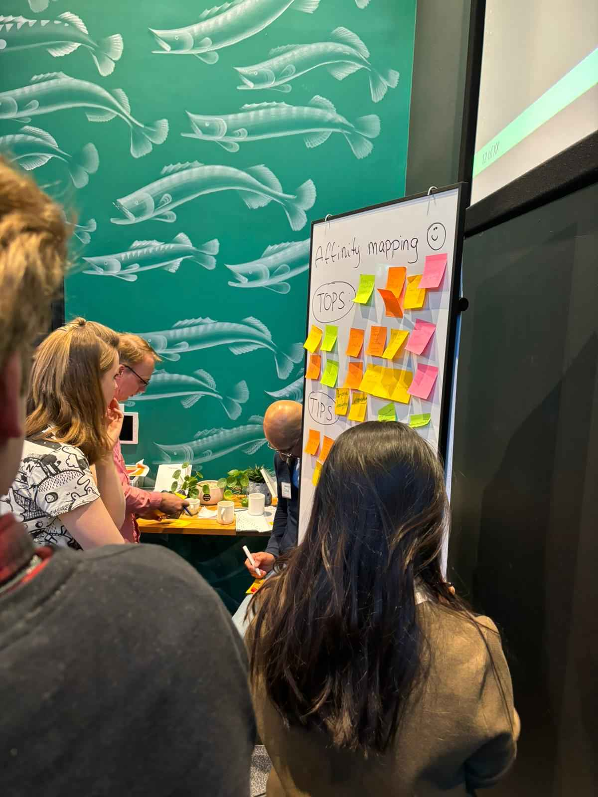
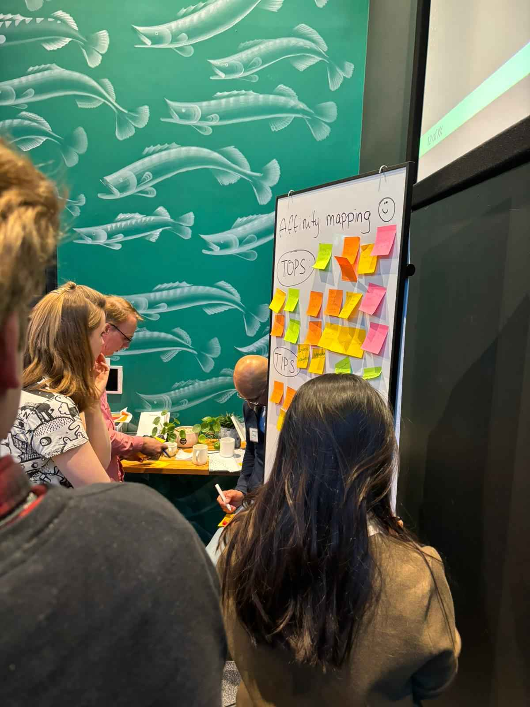

This is where you will find everything I’ve done for the learning outcome front-end development this semester, in greater detail.
In class, we learned about Affinity Mapping, a method for organizing research on a specific topic. Initially, we had a group assignment where the entire class analyzed the popular website "bol.com." Each student wrote down tips and tops for the website, which we then combined onto a whiteboard to create our first affinity map. This exercise helped us understand the website's strengths and weaknesses from various perspectives.
Later, we split into our project groups and repeated the process for different websites. This allowed us to apply the Affinity Mapping technique in smaller teams, fostering collaboration and deeper insights into each website's user experience and design elements.
Pre-Sorting
Post-Sorting
In class, we explored Information Architecture, focusing on how to organize and structure content on websites. As part of the learning process, we examined the navigation bars of multiple websites. Each group wrote down the links from these navbars and categorized them based on the sections they believed the links belonged to.
This exercise was designed to help us understand how different websites structure their information and how users perceive and navigate through various sections. By comparing and discussing our categorizations, we gained insights into effective information organization and user-friendly design practices. This hands-on approach reinforced the importance of clear and intuitive navigation in enhancing user experience.
1st Result
2nd Result
As part of our project, our group had the opportunity to put our knowledge of Affinity Mapping into practice with our client, Lighttown Speakers. We visited the club and engaged directly with its members to gather their insights and feedback.
We asked members to provide their thoughts on various aspects of the club's website, writing down their tips and tops on sticky notes. We then collaboratively organized these notes on a board to create an affinity map, categorizing the feedback into common themes and areas for improvement.
This practical application of Affinity Mapping provided valuable insights into the user experience from the perspective of actual users. We discovered key areas that needed enhancement, such as improving ease of use, creating a separate website for clarity, and making the website more visually appealing. This direct feedback was instrumental in guiding our design decisions and ensuring that the final product met the needs and expectations of the Lighttown Speakers members.
Start
 

Midway
Result
Tips & Tops
I made a detailed analysis of AI translation tools that can help Eindhoven RockCity bridge language barriers and reach a broader audience. The document outlines various AI tools such as Google Translate, Microsoft Translator, DeepL, IBM Watson Language Translator, Yandex.Translate, and Lingvanex, evaluating their accuracy in translating Dutch to English and highlighting their key features.
This research taught me the importance of using advanced technology to improve communication and usability in an international environment. By understanding the capabilities and limitations of each tool, I learned how to choose the right solution for specific translation needs. The project also underscored the necessity of reviewing and editing translated content to ensure accuracy and cultural sensitivity.
I undertook this research to help Eindhoven RockCity effectively engage with the diverse population of Eindhoven, demonstrating how AI can enhance outreach efforts. By providing this comprehensive guide, I aim to showcase my ability to apply technical knowledge to real-world problems and contribute to the success of local organizations.
Start
Midway
Result
Tips & Tops